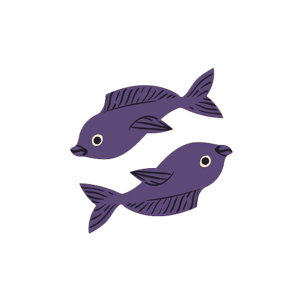

Magaskopet
Generelt
Fisken er et vandtegn og kendetegnes ved sin
følsomhed, fantasi og medfølelse. Fisken er kendt for sin evne til at forbinde sig
med andre på et dybt, følelsesmæssigt plan. Den er intuitiv og ofte i stand til
at forstå ting, der ligger under overfladen, både i sig selv og i andre.
Som et meget introvert tegn trives fisken bedst i rolige omgivelser, hvor den kan
fordybe sig i sin indre verden. Dens kreativitet er en af dens største styrker,
og den har en stærk evne til at drømme og forestille sig nye verdener.
Fisken er også kendt for sin medfølelse og vilje til at hjælpe andre. Den stoler derudover meget på sin intuition og finder ofte vej i livet ved at
følge sin mavefornemmelse frem for logikken.
Se også generelle studietips her
Studietips
Fisken er intuitiv, kreativ og følsom.
Når du studerer, kan et roligt og inspirerende miljø med dæmpet belysning og
afslappende musik gøre en stor forskel. Skab omgivelser, der fremmer kreativitet
og ro.
For at gøre dine studier mere interessante kan du bruge kreative metoder som
mindmaps, tegninger eller små historier til at organisere dine noter. Det hjælper
dig med at huske stoffet på en måde, der føles naturlig.
Da du godt kan være følsom over for stemninger, kan korte pauser med meditation eller
åndedrætsøvelser være nyttige, når du har brug for at genfinde fokus og balancen
i din studieproces.

Fiskene
19. februar - 20. marts